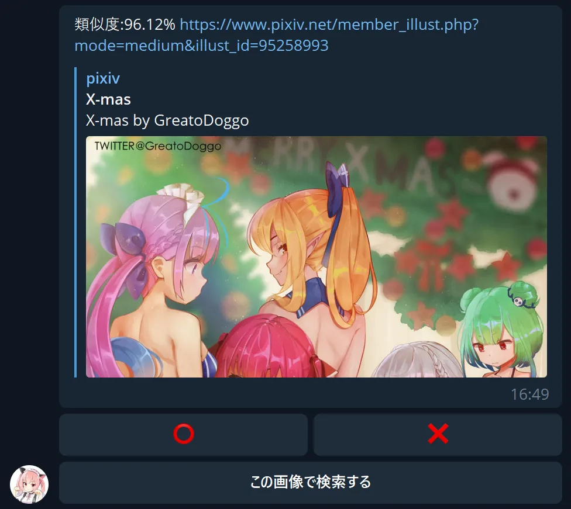

Commands コマンドリスト 指令集
/start- Greet with kettyan and start using./help- See help message./r0- Randomly pick one illust id from Pixiv. Theoretically, the illust will be safe for work, but in case that the illust is R-18, a #NSFW (not safe for work) tag may be added in the caption.The illust id may contain multiple images, and all of them (no more than 10) will be sent to the user. If the total number of images is larger than 10, only the first 10 of them will be sent. The returned images are in compressed
jpgformat, and original files can be accessed from the pixiv link attached with the images.Time to fetch the images depends on server conditions and varies from 1s to 20s. If no images are returned after 30s, the command will be dumped due to timeout.
/r18- Randomly pick one R-18 illust id from Pixiv. A #NSFW (not safe for work) tag will be added in the caption.The illust id may contain multiple images, and all of them (no more than 10) will be sent to the user. If the total number of images is larger than 10, only the first 10 of them will be sent. The returned images are in compressed
jpgformat, and original files can be accessed from the pixiv link attached with the image.Time to fetch the images depends on server conditions and varies from 1s to 20s. If no images are returned after 30s, the command will be dumped due to timeout.
/d- Roll a die. A telegram dice object will be returned.
Testing features:
/r0 <n>Call/r0for n times (1≤n≤10).
e.g./r0 5will request 5 illust ids, each returning one image only./r18 <n>Call/r18for n times (1≤n≤10).
e.g./r18 5will request 5 R-18 illust ids, each returning one image only.
P.S. The above features are not recommended to use, since clicking the command button for multiple times will definitely be faster than calling the parameters.
Direct Message
Users may send direct messages to kettyan for different usages:
- Get illust by pixiv id
- Search pixiv illust by tags or keywords
- Find similar illust
- Convert telegram stickers to images
Get illust by pixiv id
What is a pixiv id?
A pixiv illust id is the unique identifier for the illust. The pixiv id may be found in the pixiv url.
e.g. url: https://www.pixiv.net/artworks/12345678, id: 12345678
e.g. url: https://www.pixiv.net/member_illust.php?mode=medium&illust_id=33445566, id: 33445566
When a digit number is sent to kettyan, kettyan will regard it as a pixiv id and try to return the images of this illust id. Kettyan will tell the user if the pixiv id is invalid (no such id).
URLs with https://www.pixiv.net/artworks/xxxxxxxx format can also be sent to kettyan, which will be recognized as a pixiv id. Forwarded messages are also supported as long as the url is contained in the text and no images are sent together with the text (images are handled in here).
Examples
Acceptable
- 93983800
- https://www.pixiv.net/artworks/83468695
- ふにゃあああ～ https://www.pixiv.net/artworks/96058824いいね
Invalid
- p86278368
- pixiv.net/artworks/95714360
- Images
Search pixiv illust by tags or keywords
If the message contains words, kettyan will recognize them as tags. Tags are separated by space (not comma or semicolon). Keyword search is also available, and only one keyword is supported, i.e., if multiple keywords separated by space are sent, then only the first one will be taken.
Since tags/keyword search all work in text mode, when a text message is sent to kettyan, tags search will occur first, and then keyword search is triggered if tags search returns nothing.
Keyword search is not very accurate, so simple keywords such as "gawr" are recommended. Tags search is more powerful and recommended, though it is not guaranteed to find the required illust especially with too many tags.
Examples
Acceptable
- loli
- hololive r18
- hello
Invalid
- love,ntr,loli
- Find pictures of rushia!
Find similar illust
When photo message is sent, kettyan will search it on Saucenao. If the message contains multiple images, kettyan will serach for each of them independently. A link with similarities will be returned and the preview of the link will be provided by Telegram if possible.
Three interactive buttons will be attached to the returned link.
If you think the search result is satisfying, you may press the ⭕ button or just leave it without doing anything; If the result is unexpected, you may try to press ❌ to see next result with lower similarity. When no other results can be shown, a Yandex search link will be provided. If too many people are searching, then the yandex link will be unavailable due to bot detection.
If you are searching for an incomplete photo's original version, saucenao seems to be poor at such work. If kettyan returns a similar illust but not a pixiv one, you may try to press この画像で検索する to further search for this image.
Convert Telegram stickers to images
Send telegram sticker to kettyan and the png original file together with the compressed jpg picture will be returned.
Only support static stickers, i.e., animated stickers cannot be converted using kettyan.
Inline Call
kettyan does not support inline call
Group Message
kettyan does not support group message